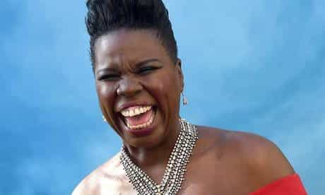
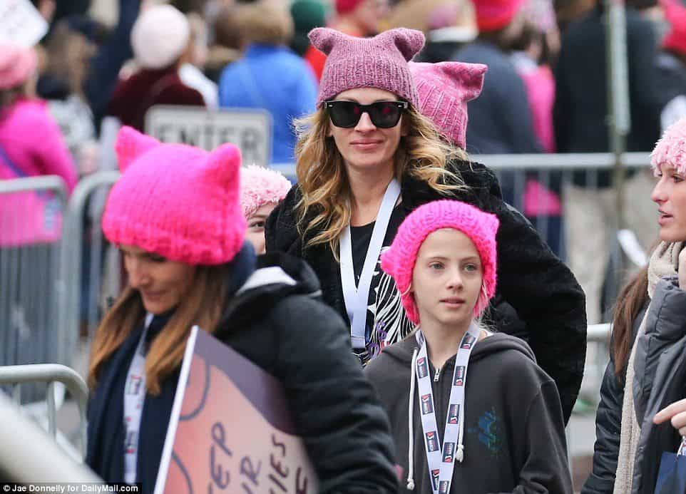
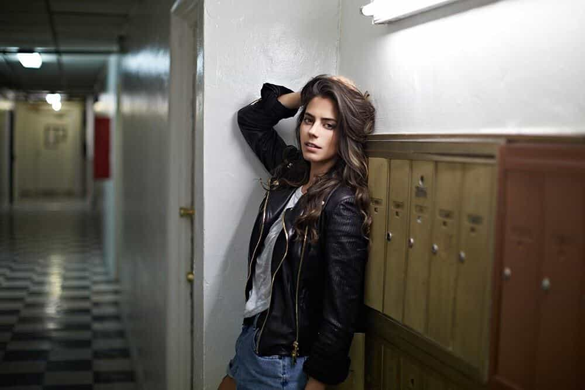

Edgar Tru is a Southern-based objectivist, natural-minded contrarian, and eleutheromania. Follow me on Gab.


Online dating is a horror show. It makes one feel even further alone, isolated, and depressed. The results are usually unattractive and/or overweight women attempting to find that love which isn’t looking for them. Not to be utterly crass, but a lot of men do not attempt online dating to meet the undesirables.
So, I would enjoy divulging my observations, as I’m sure have been made by a-many fine gentlemen seeking romance and a relationship.

Women like Keira Knightley are NOT waiting for you on OKCupid
If you’ve explored dating sites or apps, you’ll soon discover that if there are two women in a photo, one being far more appealing to the eyes, chances are its not that one. If you discover a seemingly half decent-looking woman with the first few photos being close-ups that look edited to glamourize her apparent beauty, it turns out many times over it’s an unattractive, overweight option. It’s as if only the desperate and least desirables attend these dating sites more than the opposite.
Look, I understand people cannot always help how they look, and I personally do not enjoy making fun out of another’s appearance. It makes me feel shitty. But, after awhile of fishing for goods, one begins to lose patience for the sloppy choices placed before him.
Hate her or not, Emma Watson is a gorgeous woman and you won’t find many Western women to match her looks.
I’ve noticed this trend where editing on a cartoon-esque dog or cat nose and animal ears onto a person’s face and head is in their photo, I would assume, to be taken as cute. If that’s not annoying enough, when a woman over the age of 25 is still sticking her tongue out in every other photo, it begins to display well a frightening realization which was always in front of me: the bitch isn’t worth it.
Online dating exposes in broad daylight the pain-staking obvious that women are, naturally, immature. I’m not necessarily faulting them for their silly girls-just-want-to-have-fun mentality, but I certainly despise it. And a young woman (most certainly not a lady) who feels this desire to stick out her tongue may seem petty to some, but I see it as the image of hopelessness in finding a decent, mature lady.
Now, there have been whispered rumors women secretly have oral sex with their dogs of whom often times are male. Perhaps it’s late one lonely night, you happen to spill some peanut butter onto your crotch and Fluffy just so happens to be nearby, and tongue stuff happens.
When I first was made aware of this, I couldn’t help but be amused at how many women have photos with their dogs emphasizing being a dog mommy. It repulses me because, what I believe, is that they’ve been robbed of traditionalism and motherhood, and they still have those motherly instincts. But since they’ve no baby they end up putting that maternal drive elsewhere, such as in their pets, or activism for an outside group whom the motherless winch sees as a victim in need of her care and affection.
And let’s rant a moment about the female who post photos of herself holding a glass of vodka while laughing like an autistic horse. It could lead one to hoping hell is a real place and bad people go there forever. Granted, the vodka-lit chick may rarely party and wanted to attempt conveying how she’s not a total deadbeat, but I’ve heard stories from close female sources that the women of today, my generation and older, are pretty lousy if you’re searching for anything remotely close to wife material. They’re drunks, drug abusers, whores, money-grubbing snakes, cheaters, pill-popping fanatics, drama queens, and so on this list goes. It truly is a bloody disgrace. Where are the ladylike females?

After the election of Donald Trump, it hit a hard nail in the spine of many who bought into the “He’s a racist and America is a hate speech nation!” narrative. Thus, as inspired by madness itself, many women now take to making note that if you voted for President Trump, then swipe left. The last thing I want is some bitch expressing anything about politics when I’m damn sure she still believes criticizing immigration or Islam equates to anything about race. They do not need to talk politics. Unless you’re Lauren Southern or Ann Coulter, zip it!

When I see photos of liberal bitches holding their signs at a protest a part of me is repulsed while the other is fine with it because they look like a pig reincarnated as a human being, and that somehow makes me feel better. It astounds me the liberalism within the female sex and how aggressive these motherless winches are. I don’t care if you believe ‘love is love’ or ‘no one is illegal.’ And when these are the sorts of women who advocate for abortion, despite how grotesque I’ve come to recently view the procedure, I wouldn’t bother stopping them from aborting anything which could be influenced by their natural frantic lunacy and have their offspring effect our society.
The stunning Ana de Armas
There are far too many profiles with several close-up car selfies. Perhaps it’s due to the sun providing enough light to make you appear fuckable when you’re clearly laced with fat and triple-chinned. The profiles where the chick is McDonald’s disgusting, yet she writes very little on her profile with short responses and poor grammar, is odd to me.
If you’re what is commonly less desirable in society, then your personality may be the only thing to save you. Some may say beauty is subjective. Perhaps it is given beauty cannot be measured in a lab with empirical evidence; however, we can most certainly observe there is an objective preference.

Tinder is lifeless and has become, as obvious as it may be, a slideshow for attention whores who find bathroom photos with their ass halfway on the sink counter as somehow appealing. Granted, I enjoy the looks as much as the next heterosexual male, but if one is still searching through the vast mere-to-nothingness of the sexual market place for a decent partner, these are not my first pick.
Bumble is okay and you may be more likely to just meet guy friends on the BFF sector rather than a decent woman who is currently too busy building her career as her eggs die off. OKCupid and Hinge have also been fair options, if you dare indulge in the insanity.
To wrap things up, many men accept the dating arena has changed and has been breaking down for some time; thus, they aim for game. Some men would prefer the road travelled not by whoredom but by traditionalism, or at least some form of something now long behind us, and seemingly never coming back round. At least not in my lifetime as far as the West is concerned.
I’d avoid online dating unless you’re looking for a cheap thrill and a bottomless human interaction. They are a gateway to potentially furthering your despair as you scan the landscape realizing, with a hard red-pill gut-punch, that what is online is often offline as well, and that we cannot escape the stomping triple-chinned atrocities which come our way, cheeseburger in one hand, milkshake in the other, with a liberal message of hate and bombastic delusion.
Read Next: Want Better Women? Stop Feeding The Beast Of Online Dating